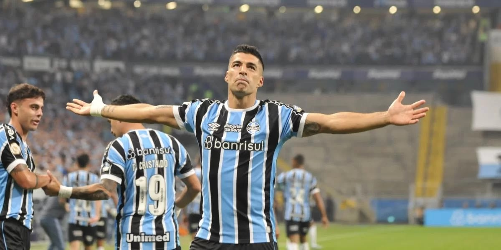

A temporada do Grêmio em 2023 começou no dia 17/01/2023 com o título da Recopa Gaúcho e a estreia de Luis Suárez, maior reforço da temporada.
Na sequência veio o Campeonato Gaúcho, vencido pelo Grêmio com certa tranquilidade, com destaques para a vitória contra o rival Internacional por 1x0 e a vitória nos pênaltis contra o Ypiranga de Erechim.

Logo após a final contra o Caxias começa o Campeonato Brasileiro, marcado pelo retorno do Grêmio à elite da competição. O primeiro turno inicia com alguns tropeços do tricolor, que logo se recupera e passa a apresentar um futebol surpreendente para um elenco sem entrosamento e montado do zero.
O ano também se destaca pela campanha na Copa do Brasil, na qual o elenco chegou até as semi-finais sendo derrotado para o Flamengo. No momento da escrita desse texto o 2º turno do Brasileirão ainda estava em andamento